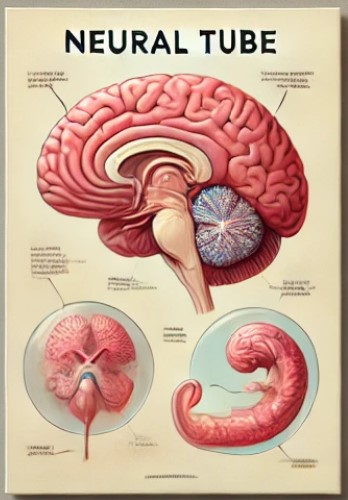
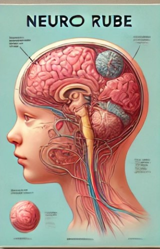
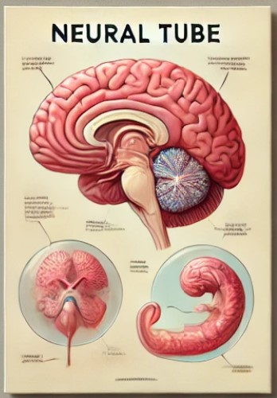
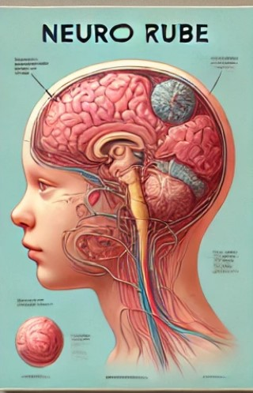
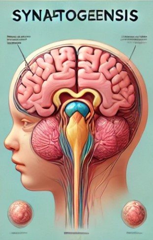
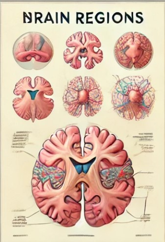
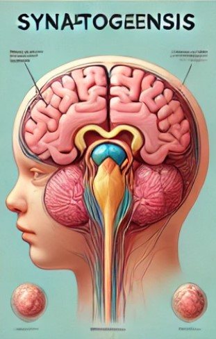
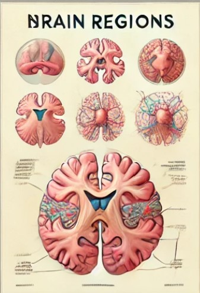

Embryonic Brain Development
Embryonic brain development is a highly complex and dynamic process that begins shortly after fertilization and continues through gestation. The development of the brain occurs in distinct stages:
- Neural Plate Formation: Around the third week of embryonic development, the neural plate forms as a thickened region of ectodermal cells.
- Neural Tube Development: The neural plate folds to form the neural tube, which eventually gives rise to the central nervous system.
- Regional Specialization: The neural tube differentiates into the forebrain, midbrain, and hindbrain regions.
- Neurogenesis: Neural stem cells proliferate to produce neurons and glial cells.
- Synaptogenesis: Neurons begin forming connections (synapses) to communicate with one another.
This process is influenced by genetic factors and environmental cues, and disruptions can lead to developmental disorders. Research continues to explore the intricacies of embryonic brain development to better understand congenital anomalies and potential therapeutic interventions.
Image Gallery
 



 


